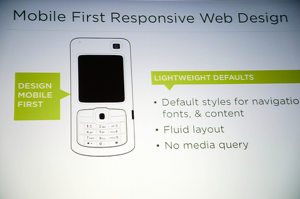
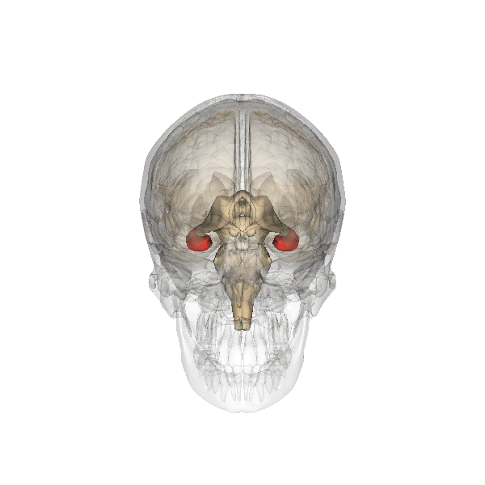
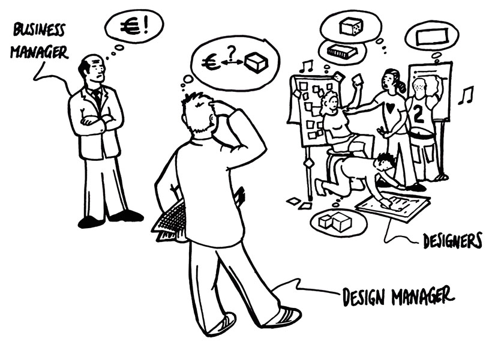

View details »Responsive web design (RWD) is a web design approach aimed at crafting sites to provide an optimal viewing experience—easy reading and navigation with a minimum of resizing, panning, and scrolling—across a wide range of devices (from mobile phones to desktop computer monitors).

View details »The term learning sciences (LS) refers to an interdisciplinary field that works to further scientific understanding of learning as well as to engage in the design and implementation of learning innovations, and improvement of instructional methodologies.

View details »In software engineering, behavior-driven development (abbreviated BDD) is a software development process based on test-driven development (TDD). Behavior-driven development combines the general techniques and principles of TDD with ideas from domain-driven design and object-oriented analysis and design to provide software developers and business analysts with shared tools and a shared process to collaborate on software development, with the aim of delivering "software that matters".
Although BDD is principally an idea about how software development should be managed by both business interests and technical insight, the practice of BDD does assume the use of specialized software tools to support the development process. Although these tools are often developed specifically for use in BDD projects, they can be seen as specialized forms of the tooling that supports test-driven development. The tools serve to add automation to the ubiquitous language that is a central theme of BDD.